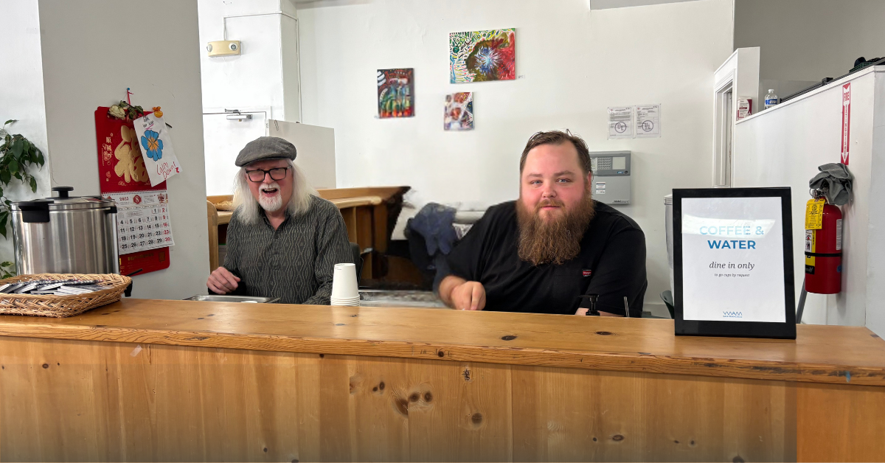

A Safe Haven in the Heart of the Tenderloin. Life in the Ellis Room!

If you’ve ever walked the streets of the Tenderloin, you know it’s a place of profound need and remarkable resilience. Every day, we encounter neighbors with stories of hardship, survival, and hope. Within the walls of YWAM San Francisco, the Ellis Room has become a small yet powerful sanctuary of restoration and connection.
The Ellis Room isn’t just a room; it’s a welcome table for the soul.
Here, neighbors find a seat, a hot cup of coffee, and most importantly, someone who will listen. We host art sessions that allow people to process their stories through creativity. In quiet hours where folks can simply rest in safety. The small group conversations invite genuine dialogue about life, faith, and the possibility of change.
Many who enter have been on their feet all day or have no place to retreat from the noise of the streets. The Ellis Room offers more than just physical rest; it’s a reminder that they are seen and valued. Volunteers and staff greet each person by name, learning their stories over time and building trust in a community where trust can be hard to come by.
God’s love is expressed in simple
It’s also a place where God’s love is expressed in simple ways every day. It can be through a shared laugh over a puzzle. A word of encouragement during a game of chess. Or a prayer offered quietly in the corner for someone who asks.
The Ellis Room is a small example of what we long to see throughout the Tenderloin: safe, welcoming spaces where people can experience dignity, belonging, and the beginnings of transformation. We believe that in spaces like this, God is writing new stories. The stories of hope in the middle of hard places.
If you’re reading this, you’re already part of that story. Your prayers, your support, and your presence make spaces like the Ellis Room possible. Together, we’re creating an environment where neighbors can encounter the love of Jesus, not through force, but through friendship.
Pray with us and consider bringing a team for a weeklong or weekend visit. Every person who walks through the Ellis Room doors will find not only shelter and safety but also a sense of family and the courage to believe in a better tomorrow.